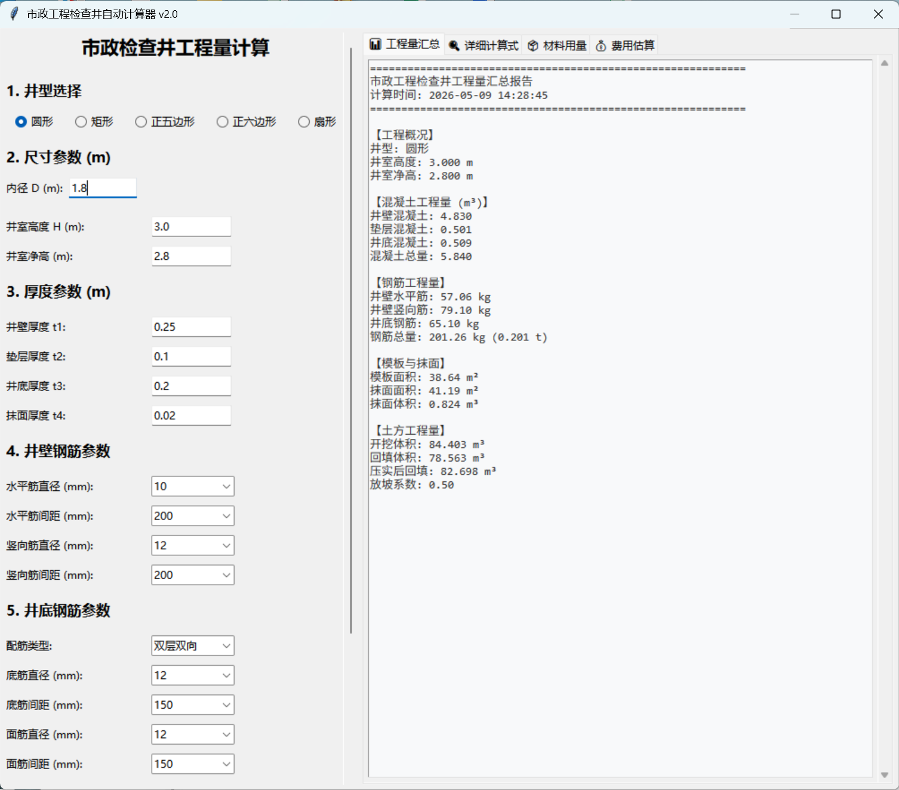

市政工程人必备，一键计算检查井工程量
专为市政工程设计的检查井工程量计算工具，支持多种规格检查井的材料、土方、混凝土工程量快速计算，告别手动算量，提高工作效率。
✅ 支持圆形/矩形检查井计算✅ 一键生成工程量清单✅ 操作简单，无需复杂设置✅ 本地运行，数据安全

文件为.exe格式，仅支持Windows系统，下载后请解压运行。
1. 下载文件后，双击运行即可使用2. 首次运行如遇安全提示，请选择“允许运行”3. 如有问题可联系：（这里可以留你的联系方式）